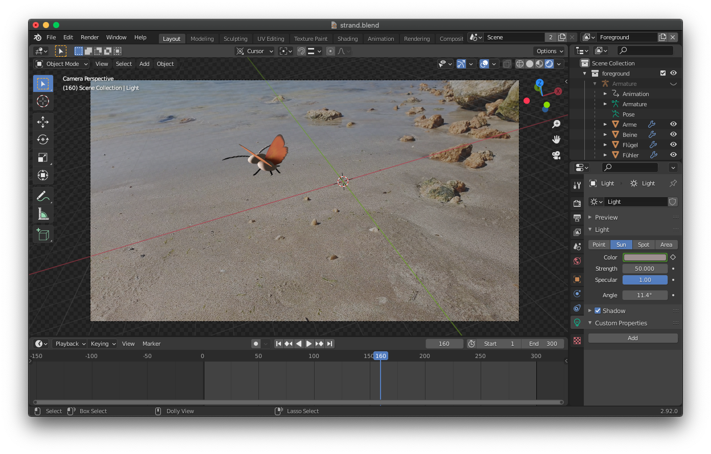

My Game Projects


Gravity Run
- Course: Media Engineering
- Semester: Summer 2021
- Contributors: Dana B., Ronny M., Maik O., Jessica R., Haochen S., Henri S.
- Platform/Language: Unreal Engine, C++
- Short description: A big group project based on the software development cycle. First, we made a requirements analysis, planned the design (including UML diagrams), and later implemented the whole game in Unreal Engine as a group. In the Testing phase all groups played all the games of the other groups. Like this, we got to know the cycle with a hands-on practical approach and it turned out great!
The game itself is pretty easy to follow along. Once the player gets on a specific platform, the gravity changes according to the orientation of this platform. The player has to shoot its way through the obstacles, jump, and must not get stuck along the way. Since the character will not stop running, the game always continues until the player reaches the end of the level.
Freddy: Protect Our Music World
- Course: Practical Informatics 1
- Semester: Winter 2020/21
- Contributors: Dana B., Eric B., Henri S.
- Platform/Language: Processing, Java-based
- Short description: Tile-based Jump'n'Run game. Inspired by the German music industry, which is developing more and more in the direction of so-called "Gangsta-Rap", we felt like the world is losing its real music. The main character was inspired by Freddy Mercury, who has to fight through several levels of different music genres. The three levels represent the genres classical, pop, and heavy metal. As Freddy progresses through these levels, the background music changes according to the genre of each level. The enemies are based on typical German Gangsta-Rappers, such as Capital Bra. To increase the score, Freddy can additionally collect music notes along the way.
Six Sweet Under
- Course: Interdisciplinary Module: velvet glove vs. iron hand
- Semester: Winter 2021/22
- Contributors: Dana B., Sevval G., Soo Hyun R., Henri S.
- Platform: Unreal Engine
- Short description: VR Experience, a world made of sweets and candy, a contrast between dream and nightmare. In this "experience" the main part was modeling different kinds of candy and implementing them into Unreal Engine to make them explode once the player interacts with them. VR is a great way to dive into other worlds, such as a room made of chocolate bars, for example. The idea was to create something we have been dreaming of as kids. And it really feels surreal being surrounded by virtual candy.
Lupus - A Space Adventure
- Course: Practical Informatics 1
- Semester: Winter 2020/21
- Contributors: Dana B., Eric B., Henri S.
- Platform/Language: Processing, Java-based
- Short description: The goal of this assignment was to create a basic object-oriented game. We got inspired by the arcade game Frogger, but with some kind of alien in space. The alien called Lupus has to avoid meteors and make it to the space ship that only appears after some time. Once the alien has left the lowest level, it can not go back and has to make its way through the meteors. Unfortunately, the backstory of this game was originally written in German. It tells about a virus that is spreading rapidly, just like Covid-19 during the time we made the game. Lupus is one of the 10% of his species that survived to this day and his task is to get to the space ship, which is their only hope to find a cure.
Unity Mini-Game
- Course: Introduction to Media Informatics 2
- Semester: Summer 2021
- Contributors: Dana B.
- Platform: Unity
- Short description: This game was not my idea, we had to implement simple functions that were given in an assignment, such as player movement, level design, collision, camera tracking, a timer, PowerUps, and an "Exit Game" button, to get to know Unity. The alien has to find a way through the maze in a given time. The first PowerUp increases the time left and the second PowerUp makes the player go faster. Like this, it makes it easier for the player to reach the goal even if he gets lost somewhere in between.
Laser Cat
- Course: Introduction to Programming (before the 1st Semester)
- Semester: Winter 2020/21
- Contributors: Dana B., Johanna O., Kairaba T.
- Platform/Language: Processing, Java-based
- Short description: My very first "game", created in a one-week introduction course to programming. A cat has to shoot mice in space ship with its laser eyes while trying not to get hit by them and also collect mice without space ships.
Other work
My Finland Adventure - Website

Front-End self-study course at LUT University about a topic of our choice.
Blender Modeling, Animation, Compositing
Course: Introduction to Media Informatics 2
Basics of modeling, animation, and compositing.
Covents Website
Access to the page --> user: gast; password: 1LuvMI1+2
Course: Introduction to Media Informatics 1
A fictional campaign about freedom in lockdown, more specifically events that can be attended from home such as live streamed concerts. This assignment included creating graphical elements, radiospots, and the website itself.
27. Juli - Short film

Access to the page --> user: gast; password: 1LuvMI1+2
Course: Introduction to Media Informatics 2
Basics of film production in groups of three. The quality of these movies has suffered somewhat due to the corona circumstances. The groups had to work remotely without being able to meet up.
Algorithmic Drawing
A static and dynamic version of an algorithmic drawing in Processing, inspired by Vera Molnar's works "Structure de quadrilatère" (1988) and "Dialog Between Emotion and Method" (1986).
Stitching Home
A somewhat different project carried out at the University of the Arts Bremen. The background was to quantize anything. I tracked the GPS routes of my cat, analyzed them, and combined my observations with my relationship to Finland. The finished project was a blanket with the routes stitched onto it in the colors of my cat.